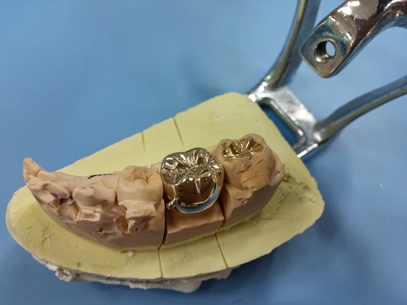

보철 치료(크라운·브릿지)
크라운은 충치가 크거나 여러 군데이거나 신경치료 뒤 치아가 약해졌을 때 치아 전체를 씌워 보호하는 치료이고, 브릿지는 빠진 치아 양옆 치아를 다듬어 세 개를 이어 씌우는 치료입니다. 빠진 치아 앞뒤 치아가 건강하면 그 치아를 깎지 않도록 임플란트를 권합니다. 비용과 기간은 진찰 후 함께 안내합니다.
한눈에 보기
- 크라운이 필요한 경우
- 심하게 깨짐 · 큰 충치 · 신경치료 뒤 · 미세한 금(크랙)
- 브릿지
- 빠진 자리 양옆 치아를 다듬어 세 개를 이어 씌움
- 보철물 제작
- 같은 건물 4층 자체 기공실
- 비용
- 진찰 후 항목별로 미리 안내합니다


크라운
심한 충치나 외상으로 많이 상한 치아는 스스로 씹는 힘을 견디기 어렵습니다. 신경치료를 받은 치아도 안으로 영양과 수분이 가지 않아 약해지고 부서질 수 있어, 치아를 씌워 보호합니다.
크라운이 필요한 경우
- 치아가 심하게 깨진 경우
- 심한 충치로 치아가 많이 상한 경우
- 신경치료를 받은 경우
- 치아에 미세한 금(크랙)이 생긴 경우
브릿지
브릿지는 빠진 치아 양옆 치아를 다듬고, 세 개로 이어진 보철물을 만들어 빠진 자리까지 함께 씌웁니다. 치아 뿌리가 남아 있으면 브릿지가 필요 없지만, 뿌리가 남지 않았으면 브릿지나 임플란트를 합니다.
치아 하나가 빠진 경우, 주변 치아도 보철치료가 필요한 경우에 할 수 있습니다. 빠진 치아 앞뒤 치아가 건강하면 그 치아를 깎지 않도록 임플란트를 권합니다. 비용과 기간은 진찰 후
4층 자체 기공실
보철물을 만들고 다듬는 자체 기공실이 같은 건물 4층에 있습니다.

자주 묻는 질문
신경치료를 한 치아는 씌워야 하나요?
신경치료를 받은 치아는 안으로 영양과 수분이 가지 않아 약해지고 부서질 수 있습니다. 이를 막으려고 크라운으로 씌웁니다.
브릿지와 임플란트 중 무엇을 하나요?
빠진 치아 앞뒤 치아가 건강하면 그 치아를 깎지 않도록 임플란트를 권합니다. 주변 치아도 보철이 필요한 경우에는 브릿지를 하기도 하며, 비용과 기간은 진찰 후 안내합니다.
진료시간 · 오시는 길
031-683-7575경기도 평택시 안중읍 안중로 132
- 성심주차장을 이용하시면 주차권에 병원 도장을 찍어 드려 무료로 주차할 수 있습니다
(이면도로 주차는 유료). - 본원 뒤 주차장은 자리가 좁습니다. 이용하실 때는 주차권을 받아 가셔야 나가실 수 있습니다.
진료시간
- 월
- 전체
- 오전 9시 ~ 오후 6시교정과 오전 10시 ~ 오후 6시
- 화
- 전체
- 오전 9시 ~ 오후 8시
- 수
- 3층
- 오전 9시 ~ 오후 6시
- 목
- 2층
- 오전 9시 ~ 오후 8시
- 금
- 전체
- 오전 9시 ~ 오후 8시2층 오전 9시 ~ 오후 6시교정과 오후 2시 ~ 8시
- 토
- 전체
- 오전 9시 ~ 오후 2시점심시간 없음
- 점심
- 평일
- 오후 1시 ~ 2시
- 휴진
- 일요일 · 공휴일 휴진